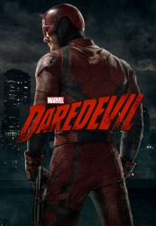

")
Alternativ: Daredevil gesehen am 12.09.2018
gesehen am 12.09.2018
 
 IMDB-Wertung: 8.7 / 10
IMDB-Wertung: 8.7 / 10  Metascore:
Metascore: 
Matt Murdock ist ein blinder Rechtsanwalt, der im Rahmen seiner Erblindung jedoch andere, übermenschliche Fähigkeiten erworben hat. Tagsüber steht er vor Gericht und kämpft dort für Gerechtigkeit, nachts nimmt er das „Recht“ in Hell's Kitchen selbst in die Hand.
Jahr: 2015
Dauer: 54 Minuten
FSK:
Land: USA Studio: NetflixTonspuren: DD5.1 - ,
Untertitel: Deutsch, Englisch,
Auflösung: 1080p (1920x1080) Größe: 78950 MB
Genre: Action, Drama, Krimi, TV-Serie
Regisseur: Phil Abraham, Stephen Surjik, Peter Hoar, Ken Girotti, Euros Lyn
Drehbuch: Bill Everett, Drew Goddard, Stan Lee, Luke Kalteux, Ruth Fletcher
Soundtrack:
Darsteller:
 Charlie Cox als Matt Murdock
Charlie Cox als Matt Murdock Deborah Ann Woll als Karen Page
Deborah Ann Woll als Karen Page Elden Henson als Foggy Nelson
Elden Henson als Foggy Nelson Vincent D'Onofrio als Wilson Fisk
Vincent D'Onofrio als Wilson Fisk Jon Bernthal als Frank Castle
Jon Bernthal als Frank Castle Elodie Yung als Elektra Natchios
Elodie Yung als Elektra Natchios Geoffrey Cantor als Mitchell Ellison
Geoffrey Cantor als Mitchell Ellison Vondie Curtis-Hall als Ben Urich
Vondie Curtis-Hall als Ben Urich Bob Gunton als Leland Owlsley
Bob Gunton als Leland Owlsley Ayelet Zurer als Vanessa Marianna
Ayelet Zurer als Vanessa Marianna Peter Shinkoda als Nobu
Peter Shinkoda als Nobu Rosario Dawson als Claire Temple
Rosario Dawson als Claire Temple Stephen Rider als Blake Tower
Stephen Rider als Blake Tower Rob Morgan als Turk Barrett
Rob Morgan als Turk Barrett Michelle Hurd als Samantha Reyes
Michelle Hurd als Samantha Reyes Peter McRobbie als Father Lantom
Peter McRobbie als Father Lantom Matt Gerald als Melvin Potter
Matt Gerald als Melvin Potter Wai Ching Ho als Madame Gao
Wai Ching Ho als Madame Gao Scott Glenn als Stick
Scott Glenn als Stick Daryl Edwards als Detective Hoffman
Daryl Edwards als Detective Hoffman John Pirkis als Stan Gibson
John Pirkis als Stan Gibson Adriane Lenox als Doris Urich
Adriane Lenox als Doris Urich David Vadim als Sergei
David Vadim als Sergei Lucas Elliot Eberl als Daniel
Lucas Elliot Eberl als Daniel Pat Kiernan als News Anchor #1
Pat Kiernan als News Anchor #1 Clancy Brown als Colonel Ray Schoonover
Clancy Brown als Colonel Ray Schoonover Phyllis Somerville als Mrs. Vistain
Phyllis Somerville als Mrs. Vistain Moisés Acevedo als Santino
Moisés Acevedo als Santino Gideon Emery als Anatoly Ranskahov
Gideon Emery als Anatoly RanskahovDatei: X:\Comic-Serien\Marvel's Daredevil\S01\Daredevil S01E01 Im Ring.mkv seit 19.11.2015
Festplatte: Comicverfilmungen+MusikCD
 Es gibt insgesamt 34 Filme in der Gruppe 'Comic-Serien'
Es gibt insgesamt 34 Filme in der Gruppe 'Comic-Serien'